각 카드의 스타일 프롬프트 블록을 생성 프롬프트 앞에 넣으면 그 룩이 적용됩니다. PPT는 색감과 한글·영문 폰트 페어링·배열까지 포함되어 있습니다. 주제를 주시면 가장 맞는 카드를 추천해 드립니다.
PPT 슬라이드 15
스테디셀러
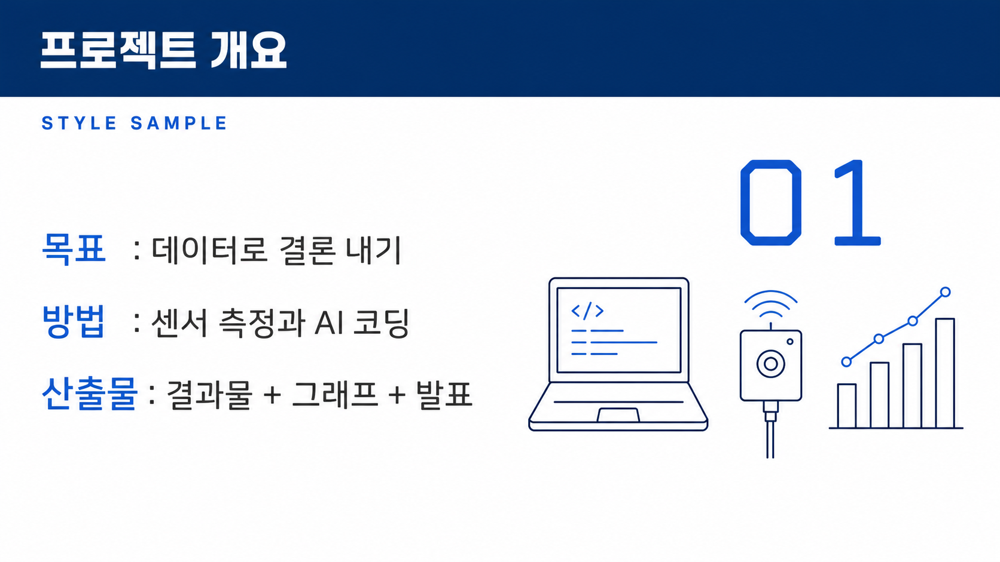
코퍼레이트 블루
ppt-steady-01
공공·교육 표준. 흰 배경에 네이비/로열블루, 상단 제목 바.
색감순백(#FFFFFF) 배경 위 네이비(#1B3A6B)·로열블루(#2E6FD6). 상단 풀폭 네이비 제목 바(제목 글자는 흰색), 본문은 진회색(#333333 계열) 산세리프. 로열블루는 강조·구분선·라인 아이콘·영문 라벨·숫자에만 절제 사용. 얇은 1px 라인 아이콘, 넉넉한 여백, 그림자 최소의 플랫 처리. 채도 낮고 대비 안정적인 기업·공공 톤.
한글휴머니스트-지오메트릭 산세리프 인상(참고 힌트: Pretendard/본고딕 계열). 제목은 세미볼드~볼드·표준 폭·자간을 약간 좁혀 견고하고 단정하게. 본문은 레귤러·표준~약간 넉넉한 자간·진회색. 획 굵기 균일, 열린 카운터, 중간 x-height, 세리프·장식 없음. 명조 인상 배제 — 신뢰감은 균일한 획과 정연한 정렬·굵기 위계로 만든다.
영문중립적 지오메트릭-그로테스크 산세리프(힌트: Helvetica/Inter/Frutiger 계열), 균일한 획에 세리프 없음. 영문 섹션 라벨·에이브로우는 올캡스 스몰캡·넓은 자간(트래킹 크게)·미디엄 웨이트로 로열블루 소형 처리. 숫자는 고정폭(tabular) 라이닝 숫자로 정렬감. 영문 헤드라인이 필요하면 미디엄~세미볼드·표준 폭.
배열한글 주(主)·영문 종(從) 위계. 네이비 제목 바 안에 한글 볼드 제목(흰색)을 크게, 그 위/옆에 영문 올캡스 스몰캡 소형 라벨(로열블루·넓은 자간)을 구간 번호·섹션명으로 얹어 대비. 크기 위계 뚜렷(제목 100 : 부제 55 : 본문 30). 좌측 정렬 기본, 여백 넉넉. 숫자·영문 라벨만 로열블루 포인트로 시선 유도.
스타일 프롬프트 블록
스타일: 순백(#FFFFFF) 배경에 상단 풀폭 네이비(#1B3A6B) 제목 바를 얹은 신뢰감 있는 기업·공공 프레젠테이션 레이아웃. 제목 바 안에는 한글 세미볼드~볼드 산세리프 제목을 흰색으로, 자간을 약간 좁혀 견고하고 단정하게 배치한다. 제목 위 또는 옆에는 영문 섹션 라벨을 올캡스 스몰캡·넓은 자간·미디엄 웨이트의 중립적 지오메트릭 산세리프로 로열블루(#2E6FD6) 소형 처리해 한글 주(主)·영문 종(從)의 위계 대비를 만든다. 본문은 진회색(#333333) 산세리프 레귤러, 균일한 획과 열린 카운터, 표준~약간 넉넉한 자간으로 가독성을 확보한다. 숫자·데이터는 고정폭 라이닝 숫자로 로열블루 포인트를 준다. 얇은 1px 라인 아이콘, 넉넉한 여백, 그림자 최소의 플랫 처리. 크기 위계는 제목 : 부제 : 본문이 뚜렷하게 대비되고 좌측 정렬을 기본으로 한다. 세리프·장식은 배제하며, 신뢰감은 균일한 획과 정연한 정렬·절제된 로열블루 강조로 완성한다.
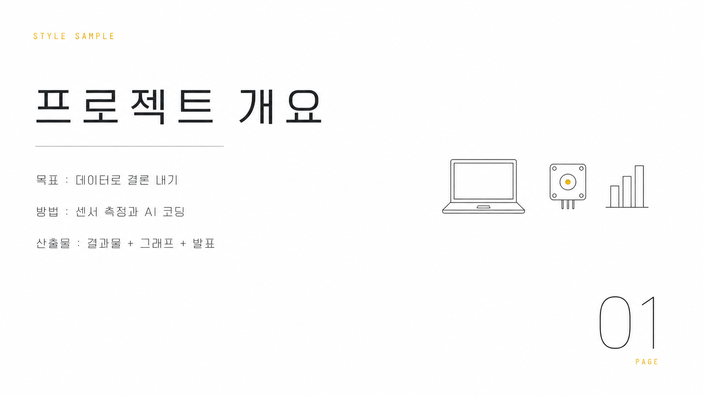
미니멀 모노
ppt-steady-02
화이트/차콜 단색 + 포인트 1색. 여백 극대화.
색감순백(#FFFFFF) 배경에 차콜(#222)과 미드그레이(#8A8A8A) 단색만 사용, 포인트는 오직 머스터드(#E1A100) 한 색. 채도 높은 색은 전부 배제하고 여백을 화면의 절반 이상으로 극대화. 구분선은 머리카락처럼 얇은 0.5~1px 미드그레이 실선, 포인트가 필요한 곳(라벨·숫자·강조 키워드)에만 머스터드를 아주 작은 면적으로 절제해서 찍는다. 그림자·그라데이션·질감 없이 완전 평면, 절제되고 집중되는 톤.
한글깔끔한 지오메트릭 산세리프. 제목은 중간~약간 굵은 굵기(medium~semibold)에 자간을 살짝 넓혀(+2~4%) 여백과 호흡을 맞추고, 본문·부제는 얇은 굵기(light~regular)로 굵기 대비만으로 위계를 만든다. 획 두께 변화가 거의 없는 저대비, 곧고 단정한 세로획, 닫힌 인상 없이 트인 속공간. 세리프·장식 없음. 명조 인상은 쓰지 않고 오직 굵기와 넓은 자간, 큰 크기 위계로 절제된 인상을 만든다.
영문두 갈래로 운용한다. (1) 킥커·라벨·페이지 번호는 모노스페이스 느낌의 등폭 대문자 소형(ALL CAPS), 자간을 크게 벌려(+8~12%) '모노'의 정체성을 시각적으로 드러낸다. (2) 큰 숫자·연도·수치는 얇은~중간 굵기 지오메트릭 그로테스크로, 세리프 없이 기하학적이고 균질한 획. 전체적으로 저대비·무장식, 대문자와 넓은 트래킹이 미니멀·기계적 인상을 담당한다.
배열한글 굵은 제목이 위계의 정점 — 화면 좌측 또는 상단에 큼직하게, 넓은 자간으로. 그 바로 위 또는 아래에 머스터드 색 영문 등폭 소형 캡스 라벨(예: "SECTION 02", "KEYWORD")을 킥커로 얹어 대비를 만든다. 한글은 크고 굵게(내용), 영문은 작고 넓게 벌린 대문자(태그·인덱스) — 크기·굵기·색이 모두 반대로 가서 대비가 선명하다. 둘 사이는 얇은 머스터드 또는 미드그레이 구분선 한 줄. 본문 한글은 라이트 굵기로 물러나고, 수치·연도만 영문 그로테스크가 크게 받는다. 정렬은 좌측 정렬 기준, 요소 사이 여백을 과감히 비운다.
스타일 프롬프트 블록
스타일: 순백 배경에 차콜(#222)과 미드그레이 단색, 포인트는 오직 머스터드(#E1A100) 한 색만 쓰는 극단적 미니멀 편집 디자인. 화면 절반 이상을 빈 여백으로 두고, 요소를 좌측 정렬로 성기게 배치한다. 그림자·그라데이션·질감 없는 완전 평면, 구분은 머리카락처럼 얇은 실선 한 줄로만. 타이포는 한글 지오메트릭 산세리프 — 제목은 중간~약간 굵은 굵기에 자간을 넓혀 크고 단정하게, 본문·부제는 얇은 굵기로 물러나 굵기 대비만으로 위계를 만든다(세리프·장식 없음, 저대비의 곧은 획). 영문은 모노스페이스 느낌 등폭 대문자를 아주 작게, 자간을 크게 벌려 머스터드 색 킥커·라벨·페이지 번호로만 얹고, 큰 숫자·연도는 얇은 지오메트릭 그로테스크로 받는다. 큰 한글 제목(내용) 대 작고 넓게 벌린 영문 대문자 라벨(인덱스)의 대비가 핵심. 절제되고 집중된, 기계적이면서 고요한 인상.
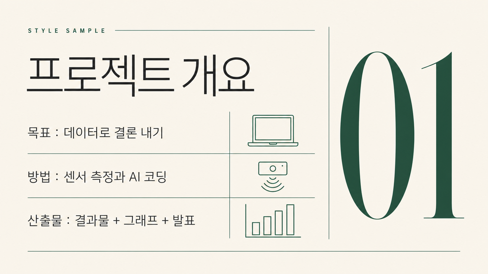
에디토리얼 세리프
ppt-steady-03
아이보리 배경 + 세리프 제목. 잡지형 그리드.
색감따뜻한 아이보리(#F6F1E7) 무광 매트 종이 배경에 잉크빛 웜 차콜(#2B2A26) 본문. 딥그린(#1F4D3A)은 괘선·스몰캡스 라벨·핵심 숫자에만 절제해 쓰는 유일한 포인트색. 그래픽 처리는 머리카락처럼 얇은 헤어라인 괘선과 넉넉한 여백으로 짜는 잡지형 멀티컬럼 그리드 — 채도 낮고 정제된, 지면 같은 대비.
한글세리프(명조) 파일에 의존하지 않고 정갈한 산세리프로 렌더하되, 편집 지면 인상을 자간과 굵기로 만든다: 자간을 넓게 개방(트래킹 열기)해 우아하고 차분하게, 획은 얇고 균일하게, 폭은 표준~약간 좁게, 대비는 낮게. 제목 한글은 미디엄, 본문 한글은 레귤러로 위계 구분. 장식 없이 지적이고 절제된 인상.
영문고대비 디스플레이 세리프 — 얇은 헤어라인 세리프와 굵은 세로획의 뚜렷한 두께 대비로 클래식한 잡지 마스트헤드 느낌. 헤드라인은 대형에 타이트한 자간, 부분 이탤릭 강조 가능. 라벨은 소형 대문자(스몰캡스)로 자간을 크게 벌려 딥그린. 숫자(페이지·통계·피규어)는 같은 세리프로 크게, 딥그린으로 강조.
배열영문 대형 세리프 디스플레이가 시각 정점(마스트헤드/피처 타이틀)을 잡고, 그 아래 한 급 작은 미디엄 굵기·넓은 자간의 한글 제목이 병기된다. 상단 키커는 영문 스몰캡스 라벨(자간 크게 벌린 딥그린)이 헤어라인 괘선과 함께. 본문은 한글 레귤러 산세리프 멀티컬럼, 큰 딥그린 세리프 숫자가 지면 리듬을 잡는다. 역할 분담: 영문=세리프·격식·대비, 한글=차분한 가독 본문.
스타일 프롬프트 블록
스타일: 따뜻한 아이보리(#F6F1E7) 매트 종이 배경의 잡지형 에디토리얼 레이아웃. 머리카락처럼 얇은 헤어라인 괘선과 넉넉한 여백으로 멀티컬럼 그리드를 구성하고, 딥그린(#1F4D3A)은 괘선·스몰캡스 라벨·핵심 숫자에만 절제해 포인트로 쓴다. 본문 텍스트는 잉크빛 웜 차콜(#2B2A26). 영문과 숫자는 고대비 디스플레이 세리프 — 얇은 헤어라인 세리프와 굵은 세로획의 뚜렷한 두께 대비로 클래식한 잡지 마스트헤드 인상, 헤드라인은 대형에 타이트한 자간, 부분 이탤릭 강조. 한글은 세리프 폰트에 의존하지 않고 정갈한 산세리프로 렌더하되, 자간을 넓게 열고 획을 얇고 균일하게, 폭은 표준~약간 좁게 하여 편집 지면 특유의 차분하고 우아한 인상을 만든다. 배열은 영문 대형 세리프 디스플레이가 시각 정점을 잡고, 그 아래 한 급 작은 미디엄 굵기의 넓은 자간 한글 제목이 병기되며, 상단에는 영문 스몰캡스 라벨(자간을 크게 벌린 딥그린)이 헤어라인 괘선과 함께 키커로 놓인다. 본문은 한글 레귤러 산세리프 멀티컬럼, 큰 딥그린 세리프 숫자가 지면의 리듬을 만든다.
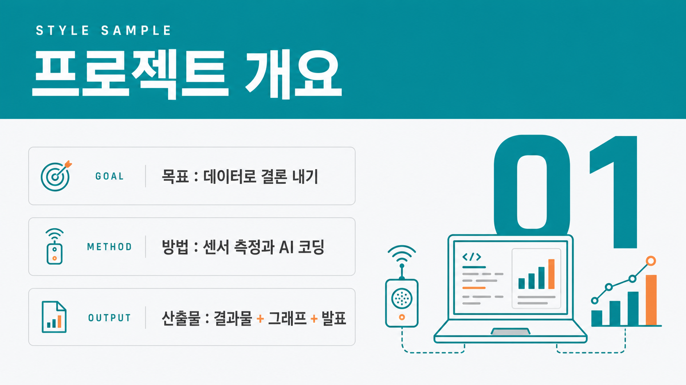
그리드 인포
ppt-steady-04
밝은 회색 + 카드 그리드. 표·수치 강조(아두이노 데크 계열).
색감아주 옅은 회색(#F7F9FA) 배경에 청록(#00979D) 포인트, 주황(#F2994A) 보조를 쓰는 플랫 벡터 데이터 톤. 상단 폭 넓은 청록 제목 바(흰 텍스트), 아래는 카드 그리드와 표 중심 레이아웃. 구분선은 얇은 회색(#E3E8EA), 그림자는 거의 없이 평평하게. 청록은 제목바·표 헤더·핵심 수치에, 주황은 하이라이트·증감 표시·소량 강조에만 절제해서 사용. 넉넉한 여백으로 정보 밀도를 낮게 유지.
한글휴머니스트 산세리프 인상, 세리프 없음. 제목은 굵게(bold~semibold), 소제목은 중간(medium), 본문·표·캡션은 regular. 글자폭 표준~약간 넓게, 자간은 0에 가깝게(제목만 아주 살짝 좁게), 획 굵기 균일하고 속공간이 열려 작은 표 글자에서도 또렷. 크기 위계 3단(대 제목 / 중 항목명 / 소 표·캡션)으로 명확히 구분.
영문지오메트릭~네오그로테스크 산세리프, 세리프 없음. 라벨·섹션 태그·표 헤더의 영문은 전부 대문자(스몰캡스 느낌), 넓은 자간, 얇은~중간 굵기. 숫자는 고정폭 라이닝 숫자(tabular lining figures)로 표에서 자릿수·소수점이 세로로 정렬되게. 제목을 보조하는 영문은 중간 굵기, 단위·범례는 소형.
배열한글이 주 정보(제목·항목명·본문·표 텍스트), 영문은 보조 라벨과 숫자 담당. 상단 청록 바 안에 흰색 굵은 한글 제목을 두고, 그 위 또는 왼쪽에 영문 소형 대문자 카테고리 라벨(넓은 자간)을 킥커로 얹는다. 카드·표 헤더는 영문 스몰캡스 라벨(청록) + 한글 중간굵기 항목명 조합. 핵심 수치는 영문 tabular 숫자를 크게, 단위는 작은 한글로 붙인다. 대비 원리는 '큰 한글 제목 vs 작고 자간 넓은 영문 캡스' — 크기·굵기·대소문자 3중 대비로 위계를 만든다.
스타일 프롬프트 블록
스타일: 아주 옅은 회색(#F7F9FA) 배경의 플랫 벡터 데이터 슬라이드. 상단에 폭 넓은 청록(#00979D) 제목 바를 두고 그 안에 흰색 굵은 한글 제목(휴머니스트 산세리프, semibold, 자간 살짝 좁게)을 넣고, 제목 위에 영문 소형 대문자 라벨을 넓은 자간으로 킥커처럼 얹는다. 본문은 카드 그리드와 표 중심으로 구성하되 얇은 회색(#E3E8EA) 구분선과 넉넉한 여백으로 밀도를 낮춘다. 표·카드 헤더는 영문 스몰캡스 라벨(청록)과 한글 중간굵기 항목명을 짝지어 쓰고, 수치는 고정폭 라이닝 숫자로 자릿수가 세로로 정렬되게 크게, 단위는 작은 한글로 붙인다. 한글은 세리프 없이 획이 균일하고 속공간이 열린 산세리프로 작은 글자도 또렷하게, 영문은 지오메트릭·네오그로테스크 산세리프로 라벨은 대문자·숫자는 tabular. 청록은 제목바·헤더·핵심 수치에, 주황(#F2994A)은 증감 표시나 하이라이트 같은 소량 강조에만 절제해 쓰고 그림자는 거의 없이 평평하게 유지한다. 위계는 큰 한글 제목과 작고 자간 넓은 영문 캡스의 크기·굵기·대소문자 3중 대비로 만든다.
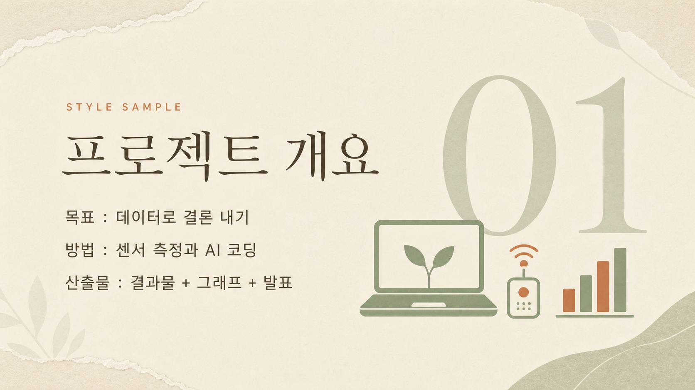
어스 뉴트럴
ppt-steady-05
베이지·세이지·테라코타. 부드러운 대비.
색감웜베이지(#EFE7DA) 배경에 세이지그린(#8AA07C)과 테라코타(#C1704A)를 포인트로, 머드브라운(#5B4A3A)을 본문 텍스트색으로 쓰는 친환경·인문 톤. 부드러운 저대비, 채도 낮은 매트 마감. 손으로 찢은 종이결·잎사귀 실루엣·둥근 유기적 형태를 여백에 은은히 배치하고, 그래픽은 딱딱한 직선보다 완만한 곡선과 자연물 실루엣으로 처리.
한글획대비가 낮고 속공간이 열린 휴머니스트 산세리프. 터미널이 약간 둥글어 따뜻한 인상. 제목은 중간 굵기(medium/semibold)에 넉넉한 자간과 여유로운 행간으로 차분·유기적 리듬을, 본문은 라이트~레귤러 굵기로 담백하게. 폭은 표준~살짝 넓게, 기계적 지오메트릭 느낌은 피하고 인간적인 곡선을 유지. (참고 힌트: 산돌 고딕네오·본고딕 계열의 부드러운 휴머니스트 감. 폰트명 의존 금지, 위 시각 속성으로 렌더.)
영문따뜻한 올드스타일/휴머니스트 세리프. 브래킷(둥근 목) 세리프, 중간 정도의 획대비, 손글씨에서 온 듯한 캘리그래픽 온기. 헤드라인은 첫 글자만 대문자인 타이틀케이스로 크게. 라벨용은 전부 대문자 소형 캡스(small caps)에 넓은 자간. 숫자는 올드스타일(텍스트) 숫자로 베이스라인이 오르내려 유기적 리듬. (참고 힌트: Garamond·Freight Text 같은 따뜻한 북세리프 감. 폰트명 의존 금지, 위 속성으로 렌더.)
배열영문 세리프를 대형 디스플레이 헤드라인으로 화면의 초점에 두고(타이틀케이스, 중간 굵기), 그 아래 한글 부제를 헤드라인의 약 50~60% 크기로 중간 굵기 휴머니스트 산세리프에 넓은 자간으로 얹는다. 헤드라인 위에는 테라코타색 영문 소형 캡스(전부 대문자·넓은 자간)로 짧은 아이브로 라벨. 세리프(영문·숫자) vs 산세리프(한글), 큰 크기 vs 중간 크기, 하이컨트라스트 vs 넉넉한 자간의 대비로 위계를 만든다. 정렬은 왼쪽 정렬 또는 약간 비대칭의 여백 넉넉한 구성.
스타일 프롬프트 블록
스타일: 웜베이지(#EFE7DA) 배경에 세이지그린(#8AA07C)·테라코타(#C1704A) 포인트와 머드브라운(#5B4A3A) 본문색을 얹은 유기적·친환경 인문 톤, 부드러운 저대비와 매트한 마감, 손으로 찢은 종이결과 잎사귀 실루엣 같은 완만한 곡선 형태를 여백에 은은히 배치. 타이포는 영문 대형 헤드라인을 따뜻한 올드스타일 세리프(중간 굵기, 둥근 브래킷 세리프, 중간 정도의 획대비, 첫 글자만 대문자인 타이틀케이스)로 크게 앉히고, 그 아래 한글 부제는 획대비 낮고 속공간이 열린 휴머니스트 산세리프를 중간 굵기·넉넉한 자간·여유로운 행간으로 차분하게 배치한다. 헤드라인 위에는 테라코타색 영문 소형 캡스(전부 대문자, 넓은 자간)로 짧은 아이브로 라벨을 얹고, 숫자는 올드스타일(텍스트) 숫자로 베이스라인이 오르내리는 유기적 리듬을 살린다. 전체적으로 왼쪽 정렬 혹은 약간 비대칭의 여백 넉넉한 구성, 은은하고 따뜻한 자연물 감성.
베스트셀러
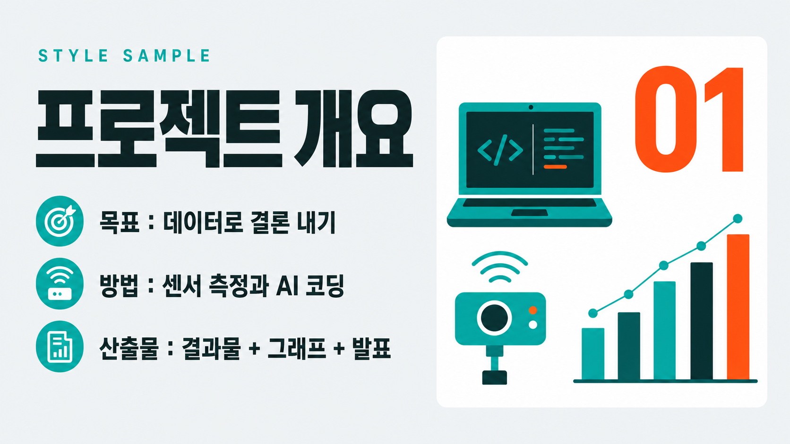
틸&오렌지 플랫
ppt-best-01
옅은 회색+강한 청록/주황, 마케팅 임팩트 헤드라인.
색감옅은 쿨 그레이 배경(#EDF1F2, 살짝 청록기 도는 밝은 회색)에 채도 높은 청록(#0FB6AE)과 선명한 주황(#FF6A2C)을 두 주역으로 대비시킨 플랫 벡터 팔레트. 그라디언트·그림자·질감 없이 100% 순색 면으로만 채우는 플랫 처리. 깊이·본문 잉크는 짙은 청록(#0B6E6A)과 차콜 그린(#16292C)으로 잡고, 카드·여백은 순백(#FFFFFF)으로 비운다. 청록이 면적 주도, 주황은 CTA·숫자·강조에만 쏘는 포인트 컬러. 넓은 네거티브 스페이스로 색면 사이에 호흡을 준다.
한글굵은(엑스트라볼드~블랙) 넓은-폭 지오메트릭 한글 산세리프. 큰 x-높이, 굵기 편차 없는 균일한 스트로크, 둥근 기하 골격에 플랫한(장식 없는) 종단. 헤드라인은 자간을 타이트하게 좁혀 덩어리감 있는 큰 블록으로 화면을 압도. 부제는 미디엄 굵기에 정상 자간으로 차분하게 내려앉힘. 명조/세리프 인상은 배제하고 순수 산세리프의 마케팅 톤을 유지 — 한글은 굵기 위계로만 위상 차이를 만든다.
영문지오메트릭 그로테스크 산세리프(세리프 없음, 플랫 마케팅에 맞춘 정직한 선택). 아이브로·라벨은 전부 올대문자(all-caps)에 넓은 자간(레터스페이싱/트래킹)을 준 소형 캡스로, 얇거나 미디엄 굵기. 숫자·통계·퍼센트는 같은 지오메트릭 계열의 볼드로 크게 키운 디스플레이 뉘앙스. 저·고 대비 없이 균일 굵기, 열린 자형, 단정한 기하 곡선.
배열위→아래 3단 위계. (1) 최상단 영문 올대문자 아이브로 라벨(소형, 넓은 트래킹, 청록 또는 주황) — 작지만 존재감. (2) 그 아래 한글 엑스트라볼드 대형 헤드라인이 화면을 압도(가장 큰 크기, 타이트 자간, 차콜 잉크). (3) 한글 미디엄 부제가 정상 자간으로 뒤를 받침. 통계·수치는 영문 볼드 지오메트릭을 헤드라인급으로 키워 주황으로 그래픽 강조. 큰 한글 헤드라인 ↔ 작은 영문 캡스 라벨의 크기·굵기 대비가 핵심 리듬. 좌측 정렬 기본, 색면과 여백으로 마케팅 임팩트.
스타일 프롬프트 블록
스타일: 옅은 쿨 그레이(#EDF1F2) 배경 위에 채도 높은 청록(#0FB6AE)과 선명한 주황(#FF6A2C)을 주역으로 쓰는 플랫 벡터 마케팅 레이아웃. 그라디언트·그림자·질감 없이 순색 면으로만 채우고, 순백 카드와 넓은 여백으로 호흡을 준다. 깊이와 본문 잉크는 짙은 청록(#0B6E6A)과 차콜 그린(#16292C)으로 잡고, 청록이 면적을 주도하며 주황은 CTA·숫자·강조에만 쏜다. 최상단에는 영문 올대문자 아이브로 라벨을 소형 지오메트릭 산세리프에 넓은 자간으로 청록 포인트를 준다. 그 아래 헤드라인은 굵은(엑스트라볼드) 넓은-폭 지오메트릭 한글 산세리프로 자간을 타이트하게 좁혀 화면을 압도할 만큼 크게. 부제는 중간 굵기 한글 산세리프에 정상 자간으로 차분하게 받친다. 숫자·통계·퍼센트는 영문 볼드 지오메트릭 산세리프를 크게 키워 주황으로 그래픽 강조. 세리프는 전혀 쓰지 않고 전부 깔끔한 산세리프로 통일하며, 큰 타이포와 여백 리듬, 강한 청록·주황 색면 대비로 마케팅 임팩트를 만든다.
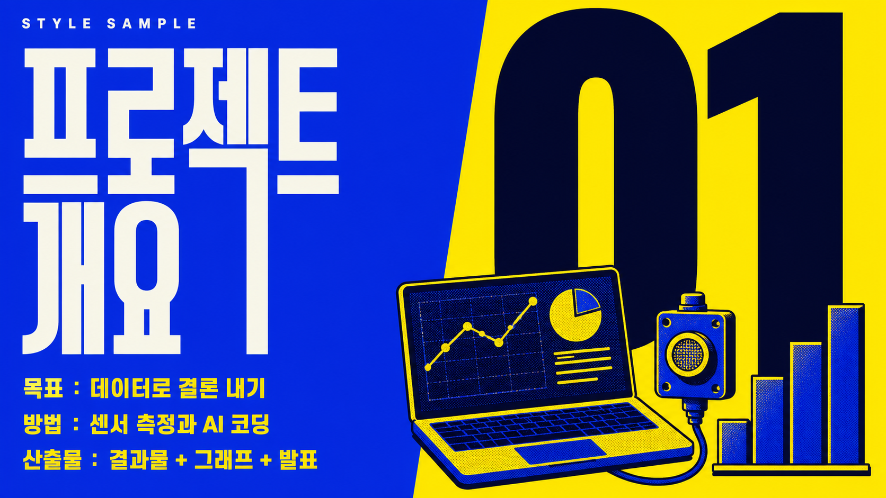
바이브런트 듀오톤
ppt-best-02
코발트×애시드옐로 듀오톤, 초대형 숫자.
색감일렉트릭 코발트블루(#1D34E8) × 애시드 옐로(#FFE600) 하드 2색 듀오톤. 보조로 near-black 잉크(#0A0E2A)와 오프화이트(#F5F5EF)만 사용하고 그라데이션은 배제, 채도는 최대로. 사진은 두 색으로 매핑한 듀오톤 처리(그림자=코발트, 하이라이트=옐로)에 미세 하프톤 그레인. 슬라이드 블록마다 바탕색을 코발트↔옐로로 교차하고 타이포는 반대색으로 녹아웃(옐로 바탕엔 코발트/블랙, 코발트 바탕엔 옐로/화이트).
한글한글은 블랙~엑스트라볼드 산세리프. 폭이 좁고 세로로 긴 인상에 자간을 바짝 좁혀 글자가 한 덩어리처럼 뭉치는 헤드라인. 세리프 없음. 부제·본문은 미디엄 굵기 산세리프로 굵기와 크기를 확 낮춰 위계를 급강하.
영문영문·숫자는 굵은 그로테스크/지오메트릭 산세리프, 세리프 없음. 헤드라인과 특히 숫자 글리프는 초대형 블랙 웨이트에 약간 넓은 폭으로 화면을 지배. 소형 라벨(kicker)은 전부 대문자(all-caps)에 자간을 크게 벌려 정돈된 대비. 큰 숫자가 주인공.
배열거대한 영문 숫자(듀오톤 강조색)를 좌상단 또는 중앙 시각 앵커로 최상단 위계에 둔다. 그 옆·아래에 한글 블랙 헤드라인을 숫자의 40~50% 크기로 스택. 맨 위엔 소형 영문 all-caps 라벨을 넓은 자간으로 얹는다. 한글=굵고 좁고 밀집, 영문·숫자=더 크고 넓고 지배적. 두 언어 사이 크기 점프를 극단적으로 벌려 강한 대비 임팩트를 만든다.
스타일 프롬프트 블록
스타일: 강렬한 2색 듀오톤 편집 포스터. 배경은 일렉트릭 코발트블루(#1D34E8)와 애시드 옐로(#FFE600)를 하드하게 대비시키고 보조로 near-black 잉크(#0A0E2A)·오프화이트(#F5F5EF)만 쓴다, 그라데이션 없이 채도 최대. 사진은 두 색으로 매핑한 듀오톤(그림자=코발트, 하이라이트=옐로)에 미세 하프톤 그레인. 타이포는 초굵게 밀어붙인다: 화면을 지배하는 초대형 영문 숫자와 헤드라인은 세리프 없는 블랙 웨이트의 넓은 그로테스크 산세리프로, 옐로 바탕엔 코발트/블랙, 코발트 바탕엔 옐로/화이트로 녹아웃. 한글 헤드라인은 폭이 좁고 세로로 긴 블랙~엑스트라볼드 산세리프에 자간을 바짝 좁혀 한 덩어리로 뭉치고, 부제는 미디엄 굵기 산세리프로 위계를 확 낮춘다. 최상단엔 전부 대문자에 자간을 크게 벌린 소형 영문 라벨. 거대한 숫자를 앵커로 두고 그 옆·아래에 한글 굵은 제목을 절반 크기로 스택해 극단적 크기 위계와 강한 대비 임팩트를 완성한다.
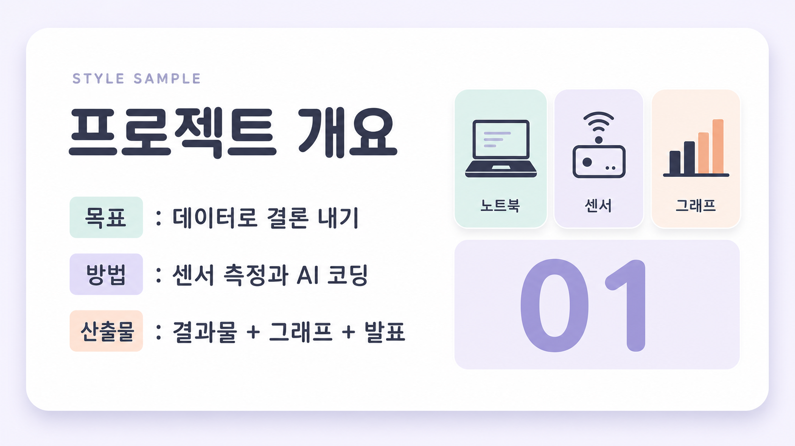
소프트 파스텔 카드
ppt-best-03
파스텔 배경, 둥근 카드, 친근한 교육 톤.
색감파스텔 배경 팔레트 — 베이스는 아주 옅은 라벤더빛 화이트(#F6F4FB), 카드는 순백(#FFFFFF)에 12~20px 둥근 모서리와 넓게 퍼진 저채도 소프트 그림자(불투명도 8~12%, 검은 테두리 없음). 포인트 3색은 소프트 민트(#B6E3D4)·라이트 라벤더(#D4C7F0)·웜 피치(#FFCDB2)를 채도 20~30% 수준으로 낮춰 카드 배경·태그·아이콘 자리에 번갈아 순환. 텍스트는 순검정 대신 딥 슬레이트(#41414F), 보조 텍스트는 뮤트 그레이(#8B8896). 전반적으로 채도 낮고 명도 높은 친근한 교육 톤 — 강한 대비·네온·경계선·짙은 배경은 배제.
한글둥글고 친근한 산세리프. 획 대비가 거의 없는 균일한 두께에 획 끝·모서리가 살짝 부드럽게 라운딩된 인상. 제목은 semibold(굵게·또렷), 부제·본문은 regular~medium으로 한 단계씩 얇게 내려 굵기만으로 위계를 만든다. 글자 폭은 표준~아주 살짝 넓게, 자간은 여유 있게(제목 -1~0, 본문 0~+2%). 명조·세리프 인상은 배제하고 라운드 산세리프의 말랑한 톤을 유지.
영문둥근 지오메트릭 산세리프 — o·e·a가 원형에 가깝고 획 대비 낮으며 터미널이 부드럽게 라운드. 세리프·콘덴스드는 쓰지 않는다(교육·친근 톤엔 지오메트릭 산세리프가 정직). 카테고리·라벨은 소형 대문자(all-caps)에 넓은 자간(+8~12%)으로 조용한 눈썹(eyebrow) 역할, 통계·수치는 크고 둥근 글자체로 강조. 폭은 표준~살짝 넓게.
배열카드 상단에 영문 소형 대문자 라벨(넓은 자간·뮤트 컬러)을 눈썹으로 얹고, 그 아래 한글 semibold 제목을 크게(주 위계), 다시 한글 regular 부제·본문을 작게 배치. 통계 카드는 둥근 대형 숫자(영문/숫자)가 주인공이고 한글 캡션이 그 아래 작게 붙는다. 영문은 항상 라벨·숫자 보조 역할, 한글이 의미 전달의 주역. 좌측 정렬 기본, 카드마다 파스텔 포인트색을 순환시켜 리듬을 만든다.
스타일 프롬프트 블록
스타일: 아주 옅은 라벤더빛 화이트 배경(#F6F4FB) 위에 순백 카드들이 12~20px 둥근 모서리와 넓고 부드러운 저채도 그림자(불투명도 8~12%, 검은 테두리 없음)로 살짝 떠 있는 소프트 파스텔 카드 레이아웃. 카드 배경·태그·아이콘 자리에는 소프트 민트(#B6E3D4)·라이트 라벤더(#D4C7F0)·웜 피치(#FFCDB2)를 채도 20~30%로 낮춰 번갈아 쓰고, 텍스트는 순검정 대신 딥 슬레이트(#41414F), 보조 텍스트는 뮤트 그레이(#8B8896)로 부드럽게 처리. 타이포는 획 대비가 거의 없는 둥글고 친근한 산세리프가 기본으로, 한글은 semibold 제목 + regular 부제로 굵기만으로 위계를 만들고 자간은 살짝 여유 있게 준다. 영문은 둥근 지오메트릭 산세리프로, 카드 상단 카테고리는 소형 대문자(all-caps)에 넓은 자간(+10%)을 준 조용한 눈썹 라벨, 통계는 크고 둥근 숫자로 강조한다. 한글이 의미 전달의 주역이고 영문은 라벨·숫자 보조 역할이며, 좌측 정렬에 넉넉한 여백. 강한 대비·네온·검은 테두리·세리프·콘덴스드는 배제한, 채도 낮고 명도 높은 친근한 교육 톤. 손그림 일러스트·블롭 장식 없이 깔끔한 카드 UI로 유지해 프렌들리 라운드와 구분한다.
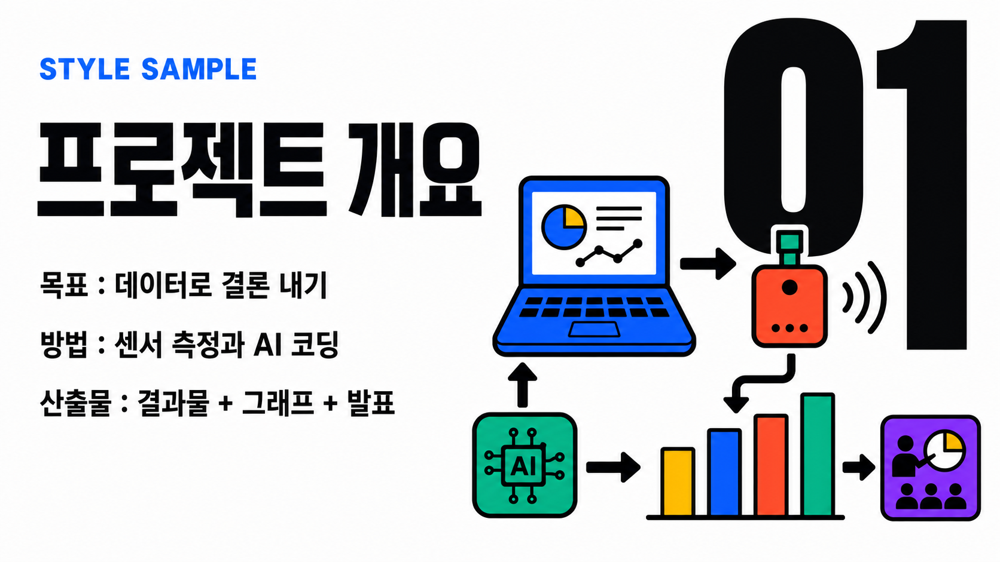
볼드 인포그래픽
ppt-best-04
흰 바탕 4색 컬러블록, 차트·스텝 인포그래픽.
색감밝은 순백(#FFFFFF) 또는 아주 옅은 웜그레이(#F5F5F2) 바탕 위에 고채도 플랫 컬러 블록을 얹는다. 4대 기둥색은 일렉트릭 코발트블루(#1E5BFF)·비비드 코랄레드(#FF4A2E)·선명한 골든옐로(#FFC01E)·프레시 그린(#12B886), 강조에 마젠타퍼플(#7B2FF7)을 소량. 텍스트·아이콘 외곽선과 본문은 잉크블랙(#0E1116). 그래디언트 없이 하드엣지 솔리드 색면, 두꺼운 스트로크, 꽉 찬 볼드 아이콘, 굵은 화살표·스텝/플로우 커넥터, 통짜 막대·도넛 차트. 채도는 높게, 도형은 각지게, 배경-도형 대비를 극대화한다.
한글엑스트라볼드~블랙 굵기의 넓은 지오메트릭 고딕. 세리프 없음, 획 대비 없이 균일하게 두꺼운 스트로크, 속공간이 크고 자폭이 넓은 모던 고딕 인상. 대제목은 자간을 살짝 좁혀 통짜 덩어리감을 주고, 본문·부제는 미디엄~세미볼드로 굵기만 낮춰 위계 확보. 명조 인상은 배제하고 무게와 넓은 폭으로 강함을 낸다. (참고 힌트: Gmarket Sans Bold / Pretendard Black 계열 느낌.)
영문두 갈래로 운용. 라벨·스텝 태그는 헤비 그로테스크 산세리프를 전부 대문자·넓은 자간으로(STEP 01, DATA, KPI 같은 캡스 라벨). 데이터 수치는 폭 좁고 키 큰 초대형 콘덴스드 블랙 디스플레이로 화면을 압도. 공통으로 세리프 없음, 획 대비 없음, 숫자는 폭 일정한 탭ular 인상. (참고 힌트: Archivo Black / Druk Wide·Condensed 계열 느낌.)
배열한글 블랙 고딕 대제목이 상단·중앙의 무게 중심을 잡고, 그 위나 옆에 영문 소형 올캡스 그로테스크 라벨을 자간 넓혀 키커로 배치한다. 인포그래픽 핵심 수치는 영문·아라비아 숫자를 초대형 콘덴스드로 뽑아 시선 1순위로 삼는다. 위계는 초대형 숫자 > 한글 블랙 제목 > 한글 미디엄 본문 > 영문 소형 캡스 라벨 순. 역할 분담은 한글=의미 전달, 영문=리듬·데이터·섹션 라벨.
스타일 프롬프트 블록
스타일: 밝은 순백 바탕(#FFFFFF, 옵션으로 옅은 웜그레이 #F5F5F2) 위에 고채도 플랫 컬러 블록을 배치한 볼드 인포그래픽. 코발트블루(#1E5BFF)·코랄레드(#FF4A2E)·골든옐로(#FFC01E)·프레시그린(#12B886)을 4대 기둥색으로, 마젠타퍼플(#7B2FF7)을 소량 강조로 쓰고, 텍스트와 아이콘 외곽선은 잉크블랙(#0E1116). 그래디언트 없이 하드엣지 솔리드 색면, 두꺼운 스트로크, 꽉 찬 볼드 아이콘, 굵은 화살표와 스텝·플로우 커넥터, 통짜 막대·도넛 차트로 스텝/플로우/데이터를 강조한다. 타이포는 한글=엑스트라볼드~블랙의 넓은 지오메트릭 고딕(세리프 없음, 획 대비 없이 균일하게 두껍고, 제목은 자간을 살짝 좁혀 덩어리감)으로 대제목을 세우고, 영문=헤비 그로테스크 산세리프를 전부 대문자·넓은 자간으로 스텝/섹션 라벨(STEP 01, DATA)에, 핵심 수치는 초대형 콘덴스드 블랙 디스플레이 숫자로 화면을 압도한다. 시각 위계는 초대형 숫자 > 한글 블랙 제목 > 한글 미디엄 본문 > 영문 소형 올캡스 라벨 순. 전체 인상은 채도 높은 색 대비와 굵은 획으로 밀어붙이는 강한 에너지의 정보 강조형 인포그래픽. 검정 테두리·오프셋 섀도·깨진 그리드는 쓰지 않아 브루탈리즘과 구분된다.
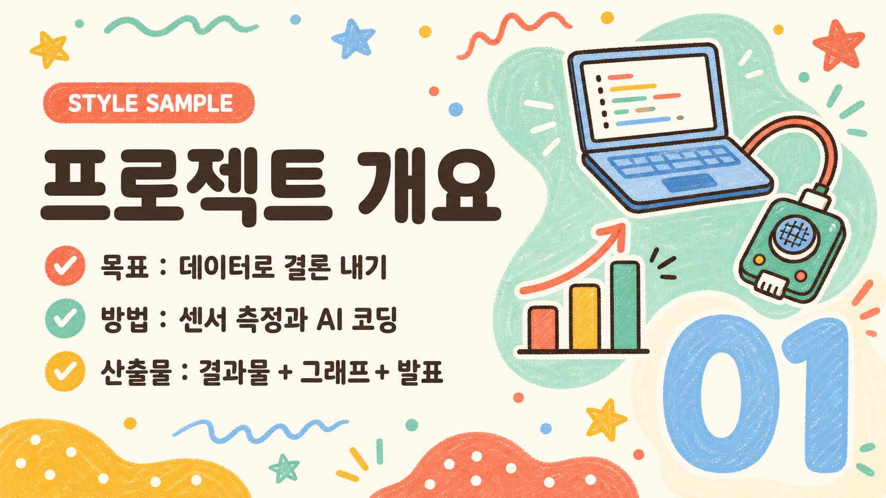
프렌들리 라운드
ppt-best-05
크레용·마커 손그림, 둥근 블롭, 워크숍 친화.
색감밝고 따뜻한 크림 아이보리 배경(#FFF6EA)에 코랄 오렌지(#FF8A5B), 선명한 머스터드 옐로(#FFC24B), 프레시 민트(#4FC3A1), 소프트 스카이 블루(#6FB7E8)로 짠 중간 채도 4색 팔레트. 텍스트와 외곽선은 짙은 웜 브라운(#4A3A30)으로 부드럽게 정돈. 그래픽은 두꺼운 둥근 라인, 크고 넉넉한 라운드 코너, 말랑한 블롭(물방울) 도형, 크레용·마커 질감의 손그림 일러스트와 도트·물결·별 같은 손그림 장식으로 채운다. 컬러는 원색보다 반 톤 밝게 눌러 눈이 편한 워크숍 무드.
한글둥근 고딕(라운드 산세리프). 중간~볼드 굵기, 넉넉하고 살짝 넓은 폭, 크고 열린 속공간, 획 끝이 동그랗게 마감된 부드러운 종결. 자간은 아주 살짝 여유 있게. 세리프·대비 없음. 제목은 볼드, 부제·본문은 미디엄으로 굵기만으로 위계를 만든다.
영문지오메트릭 라운드 산세리프. 볼드 굵기, 원형에 가까운 o/e와 동그란 획 끝, 넉넉한 폭. 섹션 라벨·키워드·번호는 소형 대문자(캡스)로 또렷하게, 헤드라인 보조 문구는 타이틀케이스. 장난기 있고 친근한 인상, 세리프 없음.
배열한글이 주역이다. 볼드 라운드 고딕 대형 제목이 화면 상단을 크게 차지하고, 그 위나 아래에 영문 라운드 캡스 소형 라벨(섹션명·키워드)과 둥근 숫자 뱃지를 악센트로 얹는다. 한글 제목 대 영문 라벨 크기비는 대략 4:1. 영문 캡스는 코랄/민트 알약형(pill) 배경 위 흰색으로, 한글 제목은 웜 브라운으로 색·형태 대비를 준다.
스타일 프롬프트 블록
스타일: 밝고 따뜻한 크림 아이보리(#FFF6EA) 배경에 코랄 오렌지·머스터드 옐로·프레시 민트·소프트 스카이 블루의 중간 채도 4색 팔레트, 텍스트와 외곽선은 짙은 웜 브라운(#4A3A30). 크고 둥근 라운드 코너, 두꺼운 둥근 라인, 말랑한 블롭 도형, 크레용·마커 질감의 손그림 일러스트와 도트·물결·별 장식으로 화면을 채운다. 타이포는 세리프 없는 둥근 고딕이 주역 — 한글 대형 제목은 볼드에 넉넉한 폭, 크고 열린 속공간, 동그랗게 마감된 획 끝, 살짝 여유 있는 자간으로 배치하고, 부제·본문은 미디엄으로 굵기 위계를 준다. 영문과 숫자는 지오메트릭 라운드 산세리프 볼드로 처리하고, 섹션 라벨·키워드는 소형 대문자(캡스)를 코랄/민트 알약형 배경 위 흰색으로 얹어 악센트를 준다. 한글 제목 대 영문 라벨 크기비는 약 4:1, 한글은 웜 브라운, 영문 캡스는 컬러 뱃지 위 흰색으로 대비. 전체적으로 초중등·워크숍에 어울리는 친근하고 말랑한 인상. 크레용·블롭·알약 뱃지의 손그림 질감이 깔끔한 카드 UI의 소프트 파스텔·3D 아이소메트릭과 갈린다.
최신트렌드
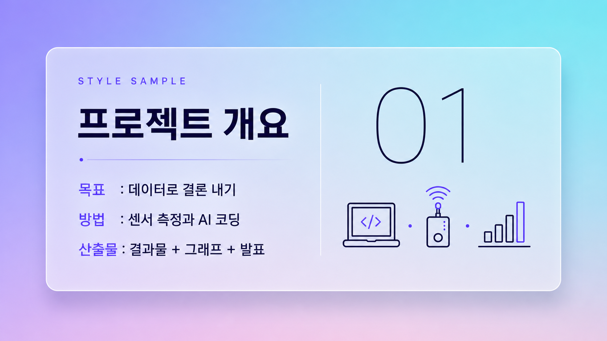
글래스모피즘
ppt-trend-01
그라데이션 위 반투명 유리 카드, 블러 UI.
색감쿨 계열 2톤 라이트 글래스모피즘. 배경은 라벤더 바이올렛(#8B7CF6)에서 소프트 시안(#6FD6E8)으로 흐르는 절제된 2색 메시 그라데이션(하단에 아주 옅은 로즈핑크 #F5B8D0가 살짝만 번짐). 그 위에 큼직한 프로스티드 유리 카드 하나(흰색 12~20% 불투명도)를 정돈되게 얹고 배경을 강하게 블러. 카드 테두리는 흰색 40~60% 얇은 하이라이트로 빛을 머금고, 부드러운 확산 그림자로 떠 있는 UI 깊이감. 텍스트는 딥 인디고/슬레이트(#1E1B3A~#2D2A4A), 포인트는 단색 일렉트릭 바이올렛(#7C5CFF) 하나로만 또렷하게(그라데이션 텍스트·다색 난반사 배제). 차분하고 구조적인 밝은 프로덕트 UI 톤.
한글산세리프(세리프 없음), 미디엄~세미볼드, 표준~살짝 넓은 폭, 열린 속공간, 균일하고 낮은 획 대비, 넉넉한 자간. 제목은 세미볼드로 또렷·구조적으로, 부제·본문은 레귤러~미디엄으로 안정적으로 읽히게. 유리의 투명·경량 인상과 어울리되 정돈된 UI 카드 안에서 무게중심을 확실히 잡는 현대적 인상.
영문지오메트릭 산세리프(세리프 없음), 원형에 가까운 O/C/G 글자꼴, 낮은 획 대비. 디스플레이 헤드라인은 씬~라이트 굵기에 전부 대문자(ALL CAPS)·아주 넓은 트래킹으로 건축적이고 정돈된 UI 간판 인상. 소형 라벨·섹션 번호도 미디엄 대문자에 넓은 트래킹. 이탤릭·장식·소문자 헤드라인 없음 — 대문자 정렬이 이 스타일의 케이스 서명.
배열하나의 유리 카드 안에서 위→아래로 구조적으로 정렬. (1) 상단 영문 소형 대문자 캡스 라벨(넓은 트래킹) 섹션 태그. (2) 그 아래 영문 씬~라이트 대문자 디스플레이 헤드라인(넓은 자간)이 시각 정점. (3) 한글 미디엄~세미볼드 부제를 헤드라인의 40~50% 크기로 두어 가독 무게중심. 전부 대문자 영문의 정렬감과 넉넉한 여백, 좌측 또는 카드 중앙 정렬. 포인트는 단색 바이올렛 하나로 절제.
스타일 프롬프트 블록
스타일: 라벤더 바이올렛(#8B7CF6)에서 소프트 시안(#6FD6E8)으로 흐르는 절제된 쿨 2색 메시 그라데이션 배경(하단에 로즈핑크가 아주 옅게만 번짐) 위에 큼직한 프로스티드 유리 카드 하나를 정돈되게 얹은 라이트 글래스모피즘. 카드는 흰색 12~20% 불투명도에 강한 배경 블러, 테두리는 흰색 40~60% 얇은 하이라이트로 빛을 머금고, 부드러운 확산 그림자로 떠 있는 구조적 UI 깊이감. 타이포는 세리프 없는 지오메트릭 산세리프로 통일하되 영문은 전부 대문자(ALL CAPS)로 간다 — 영문 디스플레이 헤드라인은 씬~라이트 굵기에 아주 넓은 트래킹의 대문자로 건축적이고 정돈된 UI 간판처럼 크게, 그 아래 한글 부제는 미디엄~세미볼드 산세리프에 살짝 넓은 폭과 넉넉한 자간으로 가독 무게중심을 확실히 잡는다. 섹션 번호·메타 라벨은 소형 대문자에 넓은 트래킹으로 정돈. 텍스트 색은 딥 인디고/슬레이트(#1E1B3A~#2D2A4A), 포인트는 단색 일렉트릭 바이올렛(#7C5CFF) 하나로만 또렷하게 쓰고 그라데이션 텍스트는 쓰지 않는다. 하나의 유리 카드 안에 요소를 좌측 또는 중앙으로 구조적으로 정렬한, 밝고 투명하며 차분한 프로덕트 UI 인상.
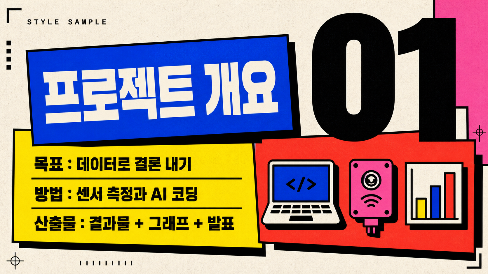
브루탈리즘 볼드
ppt-trend-02
굵은 검정 테두리·원색 블록·초대형 타이포, 뉴브루탈리즘.
색감종이 질감의 미색 오프화이트 배경(#F7F3E8, 또는 스타크 화이트 #FFFFFF)에 순수 검정(#111111) 굵은 테두리를 4~8px로 모든 블록·글상자·이미지에 두른다. 원색 블록은 일렉트릭 옐로(#FFE500), 코발트/일렉트릭 블루(#2340FF), 토마토 레드(#FF3B2F), 핫핑크(#FF5CA0) 중 3~4색만 크게 채워 쓴다. 그라데이션·소프트 섀도·중간톤 완전 금지. 대신 각지고 딱 떨어지는 검정 하드 오프셋 섀도(6~10px, 흐림 0)로만 입체감을 준다. 채도는 최대, 면적 대비는 극단(거대한 원색 면 vs 좁은 검정 여백).
한글세리프 없는 초굵은 블랙/헤비 웨이트 고딕. 자폭은 정체~약간 넓게, 속공간이 꽉 차 거의 사각형에 가까운 덩어리 인상, 자간은 타이트하게 조여 단단함. 제목은 최대 굵기로 짓눌린 듯 묵직하게, 부제·본문은 미디엄~볼드로 한 단계만 낮춰 색이 아닌 굵기로 위계를 만든다. 곡선·장식 최소화, 획 두께 균일해 거칠고 산업적인 인상.
영문영문·숫자는 초대형 디스플레이 그로테스크(네오그로테스크/고딕 계열) 블랙 웨이트, 전부 대문자, 자간을 극단적으로 타이트하게(글자끼리 닿을 듯) 조인다. 획 두께 균일하고 대비는 낮으며, 정체 또는 약간 콘덴스드해 세로로 길고 육중하게. 작은 라벨·캡션·페이지번호는 모노스페이스 느낌의 소형 대문자로, 반대로 자간을 넓게 벌려 태그처럼 처리.
배열영문 대문자 초대형 헤드라인이 화면을 압도하는 주역(가장 큼, 원색 블록이나 검정 박스에 걸침), 그 아래·옆에 한글 굵은 제목을 중간 크기로 비대칭 배치해 스케일 대비를 만든다. 한글은 검정 박스 안 흰 글자 반전 또는 원색 블록 위에 얹어 강조하고, 영문 소형 대문자 라벨은 넓은 자간으로 모서리에 태그처럼 흩뿌린다. 요소들은 그리드를 의도적으로 어긋내 겹치고 색 블록 경계 밖으로 삐져나오게 한다.
스타일 프롬프트 블록
스타일: 뉴브루탈리즘 볼드. 종이 질감의 미색 오프화이트 배경에 순수 검정 굵은 테두리(4~8px)를 모든 블록·글상자·이미지에 두르고, 일렉트릭 옐로·코발트 블루·토마토 레드·핫핑크 중 3~4색만 큰 면적의 원색 블록으로 채운다. 그라데이션·소프트 섀도 없이 각지고 딱 떨어지는 검정 하드 오프셋 섀도(흐림 0)로만 입체를 준다. 영문·숫자는 초대형 그로테스크 블랙 웨이트 전부 대문자에 자간을 극단적으로 조여 화면을 압도하는 주역으로 세우고, 한글은 세리프 없는 초굵은 블랙 고딕을 중간 크기 제목/부제로 비대칭 배치하되 검정 박스 안 흰 글자 반전이나 원색 블록 위에 얹어 대비시킨다. 작은 영문 라벨은 모노스페이스 느낌 소형 대문자에 자간을 넓게 벌려 모서리에 태그처럼 흩뿌린다. 그리드를 의도적으로 어긋내 요소가 겹치고 색 블록 밖으로 삐져나오는, 거칠고 단단한 극단적 비대칭 구성.
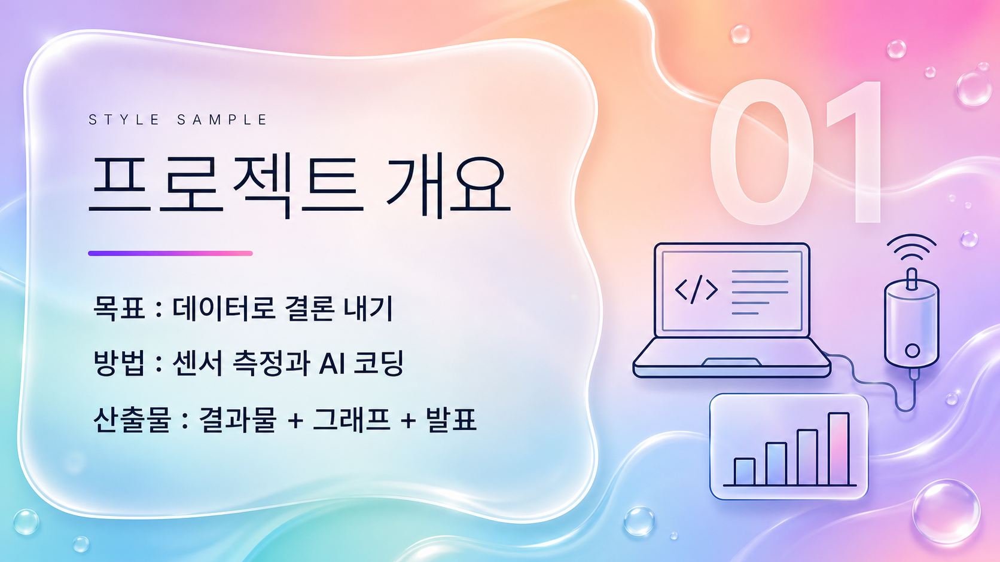
그라디언트 메시
ppt-trend-03
메시 그라데이션 배경, 광택 리퀴드 라이트 UI.
색감라벤더(#C9C6FF)·피치(#FFD9C7)·스카이블루(#C7E4FF)·민트(#CFF5E7)·연분홍(#FFD4E8)이 경계 없이 번져 섞이는 다색·고명도 리퀴드 메시 그라데이션 배경 — 따뜻한 피치·연분홍까지 폭넓게 순환해 웜톤이 함께 흐른다. 그 위에 반투명 젖빛 유리 패널(글래스모피즘)을 얹어 흐릿한 블러, 은은한 광택 하이라이트, 얇은 흰색 테두리로 리퀴드한 입체감을 낸다. 본문 텍스트는 짙은 잉크 네이비/차콜(#1C1B2E)로 밝은 배경과 또렷이 대비하고, 포인트는 바이올렛→핑크로 이어지는 채도 높은 그라데이션 스트로크 한 줄만 절제해 쓴다(단색 포인트가 아니라 그라데이션 획이 시그니처). 전체 톤은 맑고 촉촉하며 공기감 있는 다색 리퀴드 UI.
한글현대적인 기하학 산세리프(돋움 계열). 획 대비 없이 균일하고 모서리가 살짝 부드러운 인상, 표준 폭. 부제·본문은 중간 굵기(medium)로 또렷하게, 자간은 살짝 넉넉히 벌려 파스텔 배경의 공기감과 호흡을 맞춘다. 명조·세리프 인상은 쓰지 않고 위계는 오직 굵기와 크기로만 만든다 — 큰 제목이 필요해도 세미볼드까지만 올리고 헤어라인처럼 얇게 가지 않는다.
영문세리프 없는 기하학 지오메트릭 산세리프. 획 대비가 낮고 원형 볼(o, e, c)이 또렷한 매끈한 형태. 대형 디스플레이 헤드라인은 라이트~레귤러 굵기에 소문자 또는 타이틀 케이스·넓은 자간으로 공기감 있게(대문자 헤드라인 아님 — 캡스 헤드라인의 글래스모피즘과 케이스로 대비된다). 상단 키커/라벨만 소형 대문자(all-caps)에 아주 넓은 자간으로. 광택 있는 라이트 유리 UI에 어울리는 깔끔하고 미끈한 인상.
배열위→아래 3단 위계에 약간의 비대칭 리퀴드 배치. (1) 키커: 소형 영문 올캡스, 아주 넓은 자간, 라이트 굵기 — 섹션 태그. (2) 히어로: 대형 영문 지오메트릭 산세리프 디스플레이(라이트~레귤러, 넓은 자간, 소문자/타이틀 케이스)가 시각 중심. (3) 부제: 한글 중간 굵기 산세리프를 히어로의 40~50% 크기로 그 아래 배치, 자간 약간 넉넉. 대비 원리 — 영문은 크고·얇고·넓게(공기감), 한글은 중간 굵기로 또렷이 읽히게. 포인트 그라데이션 획 한 줄로 리듬을 준다.
스타일 프롬프트 블록
스타일: 라벤더·피치·스카이블루·민트·연분홍이 경계 없이 흐르는 다색·고명도 리퀴드 메시 그라데이션 배경(웜톤 피치·연분홍까지 폭넓게 순환), 그 위에 흐릿한 블러와 은은한 광택·얇은 흰 테두리를 가진 반투명 젖빛 유리 패널(글래스모피즘)을 얹어 리퀴드한 공기감을 낸다. 타이포는 세리프 없는 미끈한 기하학 산세리프 계열로 통일하되 영문 헤드라인은 소문자 또는 타이틀 케이스로 간다 — 상단에 소형 영문 올캡스 키커를 아주 넓은 자간으로 얇게 놓고, 그 아래 대형 영문 지오메트릭 산세리프 헤드라인을 라이트~레귤러 굵기·넓은 자간·소문자/타이틀 케이스로 크게 배치해 시각 중심을 잡는다(대문자 헤드라인은 쓰지 않아 케이스로 글래스모피즘과 구분). 다시 그 아래 한글 부제는 중간 굵기 산세리프로 헤드라인의 40~50% 크기, 자간을 살짝 넉넉히 벌려 또렷하게 읽히게 한다(한글은 명조 인상 없이 굵기·크기로만 위계). 본문 텍스트는 짙은 잉크 네이비/차콜(#1C1B2E)로 밝은 배경과 또렷이 대비하고, 포인트는 바이올렛→핑크로 이어지는 채도 높은 그라데이션 스트로크 한 줄만 절제해 시그니처로 쓴다. 좌측 기준의 약간 비대칭 리퀴드 배치, 유리 패널 안 넉넉한 여백, 맑고 촉촉한 다색 밝은 UI.
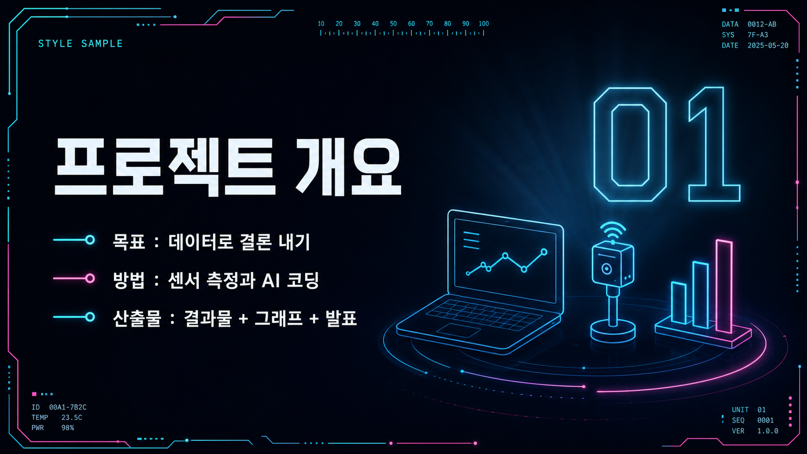
다크 네온
ppt-trend-04
짙은 배경+네온 시안·마젠타 발광, 테크 무대.
색감짙은 남색-차콜 그라디언트 배경(#0A0E1A→#141A30)에 무대 뒤 은은한 방사형 발광. 포인트는 네온 시안(#22EEFF)과 네온 마젠타(#FF3CD6) 딱 두 색 대비, 얇은 발광 라인과 외곽 글로우(bloom)로만 강조한다. 본문·제목 텍스트는 고휘도 오프화이트(#EAF4FF)로 대비를 확보해 한글 가독성을 지키고, 강조어와 숫자만 네온 색을 쓴다. 채도 높은 네온은 면적을 작게, 배경은 무광 딥톤으로 눌러 명암 대비를 키운다.
한글세리프 없는 기하학적 산세리프. 중간~볼드(Medium~Bold)의 균일하고 굵은 획으로 통일하고 얇은 웨이트는 금지한다(발광 배경에서 가는 획이 번져 뭉개지는 것 방지). 폭은 표준~살짝 넓게, 자간은 0에서 약간 좁게(타이트하되 붕괴 없이). 열린 속공간과 낮은 획 대비로 어두운 배경 위 판독성을 확보한다. 제목은 볼드, 부제·본문은 미디엄. 참고 인상은 프리텐다드/노토산스 계열의 깔끔한 현대 고딕이되 폰트명이 아니라 '굵고 균일한 산세리프'라는 시각 속성으로 구현한다.
영문두 역할로 분리. (1) 디스플레이 헤드라인: 넓은(wide) 기하학적 그로테스크, 전부 대문자, 트래킹을 넓게 벌리고 네온 시안 글로우를 입혀 테크 무대 간판 인상. (2) 라벨·캡션: 모노스페이스 테크노 인상, 소형 대문자(small caps), 넓은 자간, 얇지 않은 미디엄 굵기. 숫자는 등폭(모노스페이스) 숫자로 데이터 대시보드 느낌을 준다. 전 구간 세리프 없음.
배열영문 대형 디스플레이 헤드라인(대문자·넓은 자간·네온 시안 글로우)을 시각적 정점으로 올리고, 그 바로 아래 한글 볼드 제목을 오프화이트로 두어 실제 판독 정보를 담당시킨다(영문=분위기, 한글=내용). 상단과 모서리에는 모노스페이스 소형 캡스 영문 라벨(예: SECTION 01 / DATA)과 등폭 숫자를 시안·마젠타 포인트로 얹는다. 위계는 영문 초대형 헤드라인 > 한글 대형 볼드 제목 > 한글 미디엄 부제 > 영문 모노 캡스 소형 라벨 순. 한글은 항상 고휘도 무채색으로 유지해 네온이 번져도 읽히게 한다.
스타일 프롬프트 블록
스타일: 짙은 남색-차콜 그라디언트 배경에 무대 뒤 방사형 발광이 은은히 깔린 다크 네온 테크 무대. 포인트 컬러는 네온 시안과 네온 마젠타 두 색뿐이며, 얇은 발광 라인과 외곽 글로우(bloom)로만 강조하고 채도 높은 네온은 작은 면적에만 쓴다. 타이포는 세리프 없는 기하학적 산세리프로 통일한다 — 영문은 전부 대문자의 넓은 그로테스크 디스플레이 헤드라인에 넓은 자간과 시안 글로우를 입혀 무대 간판처럼 시각적 정점을 만들고, 그 아래 한글은 중간~볼드의 굵고 균일한 획을 가진 현대 고딕으로 고휘도 오프화이트(#EAF4FF)에 얹어 내용을 또렷하게 읽힌다(얇은 웨이트 금지, 발광 번짐 방지). 모서리와 상단에는 모노스페이스 테크노 인상의 소형 대문자 영문 라벨과 등폭 숫자를 시안·마젠타 포인트로 배치해 데이터 대시보드 같은 테크 질감을 준다. 위계는 영문 초대형 헤드라인 > 한글 대형 볼드 제목 > 한글 미디엄 부제 > 영문 모노 캡스 소형 라벨 순으로 뚜렷하게 둔다.
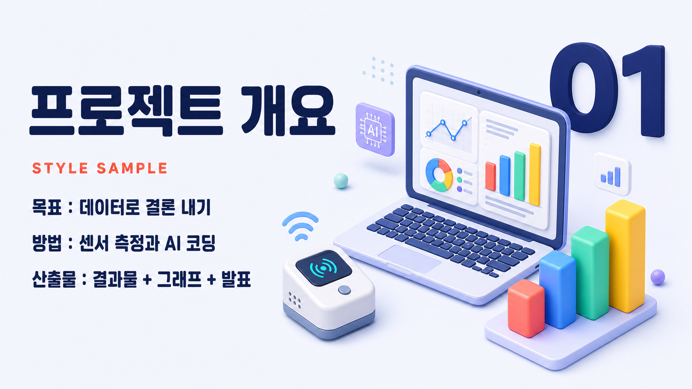
3D 아이소메트릭
ppt-trend-05
입체 아이소메트릭 아이콘/장면, 경쾌한 3D.
색감배경은 아주 옅은 쿨 화이트에 미세한 라벤더·블루 기운이 도는 청량하고 밝은 톤(#F3F6FC ~ #EEF2FB). 오브젝트는 30도 기울어진 입체 아이소메트릭 아이콘/장면으로, 둥근 모서리에 매끈한 플라스틱·클레이 질감. 경쾌한 중채도 컬러 블록: 코랄 #FF6B6B, 스카이블루 #4D9DE0, 민트 #3FD9B0, 선샤인옐로 #FFD166, 라벤더 #A78BFA. 그림자는 검정이 아니라 쿨 그레이블루의 낮은 불투명도 소프트 섀도(#C7D0E6, 12~20%)로 오브젝트 아래 부드럽게 번지듯 깔림. 텍스트는 잉크 네이비(#20264A)로 밝은 배경 위에서 또렷하게. 전체 여백은 넉넉하고 명랑한 SaaS·테크 일러스트 무드.
한글끝이 둥근 라운드 지오메트릭 고딕 인상. 세리프 없음. 미디엄~세미볼드 굵기, 약간 넓은 자족폭(살짝 와이드), 여유로운 자간으로 가볍고 친근하게. 획 대비는 거의 없이 균일하고, 속공간(내부 여백)이 큰 통통한 실루엣 — 입체 아이콘의 둥근 볼륨감과 톤을 맞춘다. 부제·본문 역할로 헤드라인보다 한 급 작게.
영문지오메트릭 산세리프, 스트로크 종단이 둥근 라운드 터미널. 큰 x-height, 거의 정원에 가까운 'o', 균일한 저대비. 헤드라인은 볼드~엑스트라볼드 대형 디스플레이(타이틀케이스), 자간은 약간 넉넉하게(타이트하지 않게). 섹션 라벨·태그는 작은 대문자(small caps) 볼드 + 넓은 자간, 액센트 컬러. 숫자·수치도 같은 라운드 지오메트릭 볼드로 크게.
배열영문 대형 라운드 디스플레이 헤드라인(엑스트라볼드, 타이틀케이스)을 최상단 시각 앵커로 크게 세우고, 바로 아래 한글 미디엄~세미볼드 라운드 산세리프 부제를 한 급 작게 병렬. 위계는 영문 헤드라인 > 한글 부제 > 소형 캡스 라벨 순. 섹션 태그/카테고리는 영문 small caps 볼드에 넓은 자간을 주고 코랄·스카이블루 등 액센트 컬러로 포인트. 큰 수치·KPI는 영문 라운드 볼드 대형으로, 단위 라벨은 한글 세미볼드 소형으로 붙임. 텍스트 블록은 좌측, 입체 아이소메트릭 오브젝트는 우측에 배치해 넉넉한 여백으로 균형.
스타일 프롬프트 블록
스타일: 밝고 경쾌한 3D 아이소메트릭 프레젠테이션. 배경은 아주 옅은 쿨 화이트(#F3F6FC)에 라벤더·블루 기운이 미세하게 도는 청량한 밝은 톤. 화면 우측에 30도 기울어진 입체 아이소메트릭 아이콘/장면을 배치하되 둥근 모서리와 매끈한 플라스틱·클레이 질감으로 그리고, 코랄(#FF6B6B)·스카이블루(#4D9DE0)·민트(#3FD9B0)·선샤인옐로(#FFD166)·라벤더(#A78BFA)의 경쾌한 중채도 컬러 블록으로 채운다. 그림자는 검정이 아니라 쿨 그레이블루(#C7D0E6)의 낮은 불투명도 소프트 섀도로 오브젝트 아래 부드럽게 깔린다. 타이포그래피: 헤드라인은 영문 대형 지오메트릭 라운드 산세리프 — 끝이 둥근 스트로크, 큰 x-height, 거의 정원에 가까운 'o', 볼드~엑스트라볼드, 약간 넉넉한 자간, 타이틀케이스로 좌측 상단에 크게. 그 아래 한글 부제는 같은 라운드 계열의 미디엄~세미볼드, 약간 넓은 자족폭과 여유로운 자간으로 가볍고 친근하게(세리프 없음). 섹션 라벨·태그는 영문 작은 대문자(small caps) 볼드에 넓은 자간을 주고 액센트 컬러로 포인트하며, 수치·숫자는 영문과 같은 라운드 지오메트릭 볼드로 크게 표기한다. 텍스트는 잉크 네이비(#20264A)로 또렷하게. 전체적으로 여백이 넉넉하고 부드러운 3D 그림자와 명랑한 컬러가 밝은 SaaS·테크 일러스트 무드를 만든다. 3D 입체 오브젝트·영문 주역·쿨 화이트·잉크 네이비로, 2D 손그림·한글 주역·웜 크림의 프렌들리 라운드와 구분된다.
카메라 / 필름룩 10
블록버스터 청록-주황
cam-cine-01
그림자 청록, 피부 주황. 헐리우드 컬러그레이딩.
스타일 프롬프트 블록
cinematic teal-and-orange color grade, cool teal shadows and warm orange skin tones, shallow depth of field, filmic contrast, blockbuster look